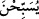
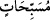

Dâvûd’un bir gün oruç tutup bir gün tutmaması da onun ibâdetteki gücünün
göstergelerindendir; çünkü en zor oruç şekli bu şekilde oruç tutmaktır. O ayrıca, devlet
idaresinin yanısıra gecenin ilk yarısında uyur; diğer yarısında ise ayakta (kâim) olurdu.
Bir tefsirde denir ki: Dâvûd, gecenin ilk yarısını uyuyarak geçirir; üçte birinde ayakta
(kıyâm) olur, altıda birinde ise yine uyurdu. Bu tefsir, el-Meşârık’taki şu hadise de
uygundur: “Oruçların Allah’a en sevimli geleni Dâvûd’un tuttuğu oruçtur. O, bir gün
oruç tutar, bir gün tutmazdı. (Nafile) namazların Allah’a en sevimli geleni ise, yine
Dâvûd’un kıldığı namazdır. O, gecenin yarısını uyuyarak geçirir, üçte birinde ayakta
olur, altıda birinde yine uyurdu.”[6]
Böyle bir namazın Allah için en sevimli namaz olmasının sebebi, nefsin gecenin üçte
ikisinde uyuması durumunda daha hafif ve ibâdete karşı daha istekli olmasından ileri
gelmektedir.
18. Doğrusu biz akşam sabah onunla beraber tesbih eden dağları, onun emri altına
vermiştik.
“Dağları, onun emri altına vermiştik” Burada, Allah’ın Dâvûd’a yaptığı ihsân
açıklanmaktadır. (
) “emri altına vermiştik” ifâdesi, (
) mânâsındadır. ( )
“beraber” kelimesi ise, (
) fiiline müteallıktır. ( ) “için” yerine ( ) “beraber” edatı
tercih edilmiştir. Çünkü dağların Dâvûd’a boyun eğdirilmesi, rüzgâr ve benzeri
varlıkların Süleyman’a olduğu gibi bir boyun eğdirilme değildir. Yâni Dâvûd’a
dağlarda tasarrufta bulunma yetkisi verilmemiştir. Dağların Dâvûd (a.s.) ile beraber
seyretmesi, ona tabi olma (tebeiyyet) şeklinde bir seyirdir. Bunun onun bir mûcizesi
olduğu da ifâde edilmiştir.
Fakîr (Bursevî) der ki: Bu durumda, Hz. Süleyman’a rüzgârın müsahhar kılındığı,
emrine verildiği gibi, tebeiyyet yoluyla onunla beraber seyrettiği için dağlar da
Dâvûd’a musahhar kılınmış, emrine verilmiş değildir. Buna göre ( ) “beraber”
mânâsında kullanılmıştır. Ancak, ( )’nın mâbâdindeki (
) “tesbih ederler” fiiline
müteallık olması da mümkündür ki o zaman mânâ şöyle olur: “Biz dağları Dâvûd’la
beraber Allah’ı takdis ve tesbih ettikleri halde boyun eğdirdik.” Dağların tesbihinin her
an yenilendiğini anlatmak için de isim (
) değil, fiil (
) kullanılmıştır.
Keşfü’l-esrâr’da der ki: Dâvûd kendisine verilmiş bir mûcize ve kerâmet olarak
dağların tesbîhini duyar ve anlardı.
Müfessirler dağların tesbîhinin nasıl bir şey olduğu hususunda farklı görüşlere
sâhiptir: Bildiğimiz bir sesle tesbih ettikleri söylenmiştir ki bu uzak bir ihtimaldir.
Lisân-ı hâlleriyle tesbih ettikleri şeklinde bir görüş daha vardır ki bu bir önceki